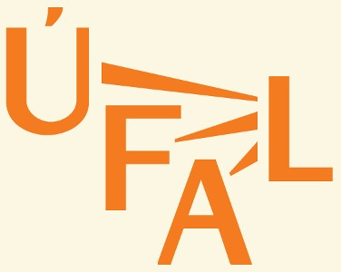

PAWS - Documentation
See the following paper for details on the corpus or contact the authors for further questions.
-
Nedoluzhko Anna, Novák Michal, Ogrodniczuk Maciej: PAWS: A Multi-lingual Parallel Treebank with Anaphoric Relations. In: Proceedings of the First Workshop on Computational Models of Reference, Anaphora and Coreference, Copyright © Association for Computational Linguistics, Stroudsburg, PA, USA, ISBN 978-1-948087-13-1, pp. 68-76, 2018, pdf, bibtex